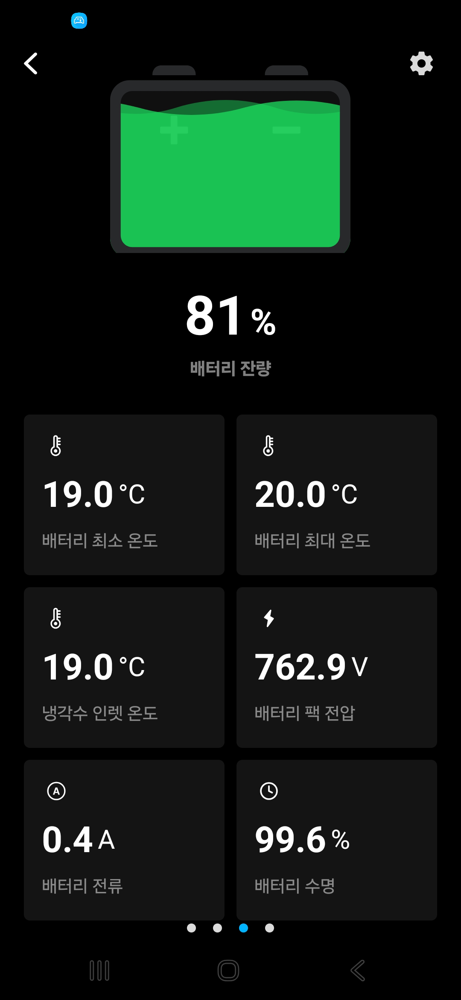
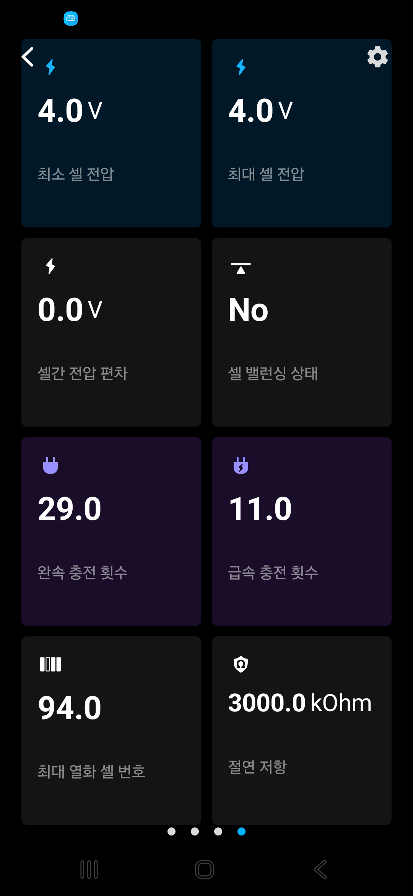
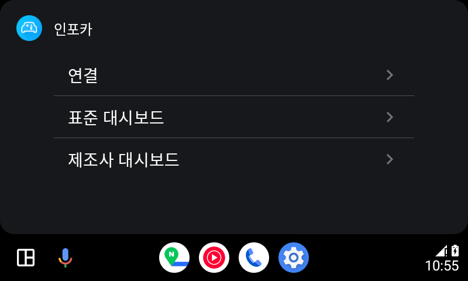
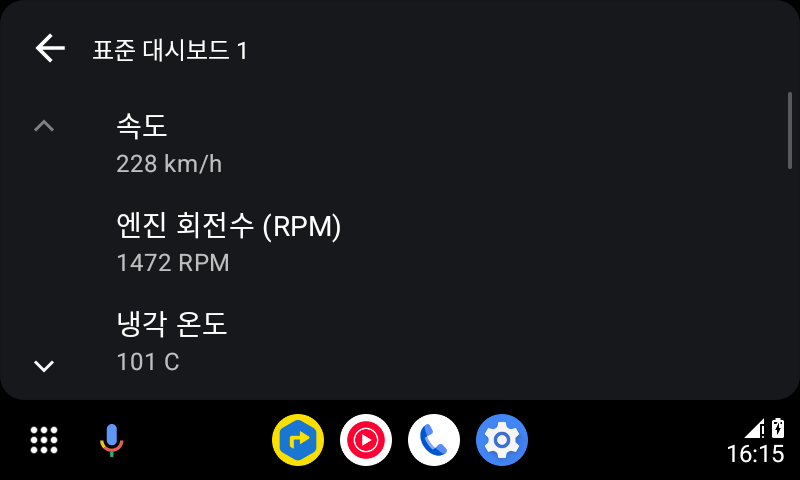
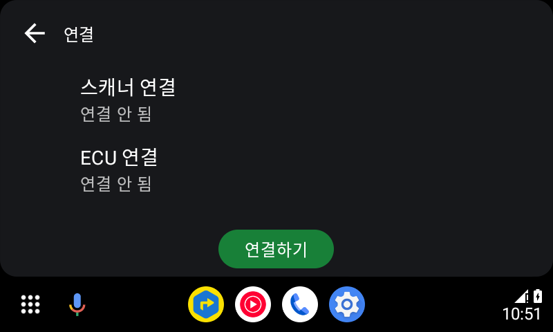

CS 자동화 칸반보드 (cs-kanban)
하이웍스 크롤링 · Claude 헤드리스 AI 분석 · 답변초안 생성·원클릭 발송 — 사내 서버 상시 운영, 팀 공용 도입.
CHOI JUNGWON — ANDROID ENGINEER
2022년부터 인포카 안드로이드.
2인 안드로이드 팀에서 OBD2·블루투스 통신 파싱부터 결제·광고·안드로이드 오토까지 맡고 있습니다.
INTRO
ELM327 블루투스 연결·재연결, OBD2/UDS 응답 파싱, PID 스케줄링.
Java MVC를 Kotlin·MVVM+Hilt로 화면 단위 이관. 진단 탭·메인 메뉴는 Compose로.
사내 위키·앱 코드를 함께 참조시켜 CS 원인 분석과 코드 감사를 자동화.
Crashlytics 상위 이슈 triage, Play 정책 대응(targetSdk·오토 심사), 고객 로그 분석.
PM·디자이너·iOS와 스크럼. 기술 제약 공유·조율.
CAREER
2022.08 입사. 정비·세차 입력 화면 하나로 시작해 지금은 OBD2 통신 파싱·결제·광고·안드로이드 오토를 맡고 있습니다. 2인 안드로이드 팀에서 누적 5,886커밋 — 2023년 이후 매년 1,100건 이상.
하이웍스 크롤링 · Claude 헤드리스 AI 분석 · 답변초안 생성·원클릭 발송 — 사내 서버 상시 운영, 팀 공용 도입.
동작하는 레거시는 보존하고, 신규·수정 기능부터 Kotlin·MVVM 구조로 점진 전환.
B2B 기능을 B2C에 이식 · 5종 엔진 × 4종 대시보드 · 설정 자동 복구 + 데이터 마이그레이션.
단일 AdMob → 5개 네트워크 워터폴 미디에이션 · Remote Config로 스토어 재배포 없이 광고 정책 제어 (미디에이션은 2025.12 철수).
Car App Library 신규 개발 · 앱-오토 화면 동기화 · 앱 종료 후 단독 동작 · 상태별 안내 화면.
차량 등록 방식 리뉴얼 · 다국어 UX 통일 · 주유소·세차장·주차장 검색 · 영수증 API 리팩토링.
블루투스 통신 · 푸시 · 알림 센터 · 정비 항목 UX/UI 2차 개발 · 차계부+정비 내부 테스트.
단일 테이블 → 정규화 다중 테이블 · 데이터 손실 없이 마이그레이션 · 구글 맵 위치 기반 · 다단위 글로벌.
블루투스 connection · 소켓 통신 · UI · 로그 저장. OBD 통신 기초 학습기.
STACK
직접 다뤄온 언어·아키텍처·도구. 초록 칩은 주력 기술입니다.
신규는 Kotlin, 레거시 Java 병존 · Hilt 생성자 주입
XML에서 Compose로 화면 단위 이관 · 폰과 오토 동시 지원
암호화 로컬 DB · 인터셉터 기반 통신 · 원격 제어
코드 생성보다 원인 분석·감사에 붙여 씀
HOW I WORK
사내 위키의 제품 정책과 실제 앱 코드를 함께 참조시켜 원인을 좁히고, 결론은 추론으로 끝내지 않고 실기기 측정으로 확인합니다.
사내 위키 정책 + 앱 코드
추측 대신 출처 확인
고객 로그로 조건 특정
리플레이 테스트로 고정
AI 페어로 작성
기존 패턴·컨벤션 준수
실기기에서 확인
정적 분석 통과 ≠ 동작
확인되지 않은 가정은 다음 단계로 넘기지 않습니다
도메인 용어(OBD2·ECU)·아키텍처·코딩 규칙을 노트로 엮은 지식 그물망. 링크된 맥락을 AI가 근거로 참조.
기획서·작업 맥락·우선순위를 AI가 직접 참조.
디자인 화면·UI 스펙·치수·컴포넌트를 AI가 직접 참조.
화면 코드가 로직·데이터를 한꺼번에. 한 곳을 고치면 영향 범위 파악이 어렵고, 상태가 흩어져 테스트도 어려움.
화면은 상태만 그리고 로직·데이터는 분리. 상태 흐름이 한 방향으로 명확해 변경 영향이 잘 보임. 신규 화면은 MVVM으로 시작하고, 레거시와 만나는 지점은 어댑터로 잇습니다.
WORK
CS 자동화 · 차량 데이터 프리셋 · 광고 미디에이션 · 안드로이드 오토.
P.01 · CS 자동화 칸반보드 — CS-KANBAN
매일 아침 개발자들이 하이웍스 공용 메일함을 열어 문의 확인 → 로그 zip 다운로드 → 대조 분석 → 필요하면 IDE로 코드 추적까지 반복했습니다. 이 수동 루틴 전체를 자동화하기로 하고 — 수집부터 AI 진단·답변초안·발송까지 이어지는 파이프라인을 설계하고, 제가 맡은 범위를 구축해 팀 업무에 연결했습니다.
시스템 아키텍처 — 문의 수집부터 검토·발송까지
DOM 스크래핑 대신 응답 포맷을 분석해 API로 직접 수집. 대화 단위 시간순 판별로 미답변 문의를 가려냅니다.
직접 구축한 사내 위키(진단 규율·정책)를 Claude 헤드리스가 검색하고, 앱 코드 레포와 교차검증. 근거는 페이지 단위로 인용되고, 지식 갱신은 git pull이 전부입니다.
테일넷 Ubuntu 서버에 systemd 상시 서비스로 배포. 수집→분석→초안이 무인으로 이어지고, 사람은 검토와 발송 승인만 합니다.
CS 문의를 확인하느라 개발자 시간이 매일 새어나간다는 걸 문제로 정의하고, 수집 크롤러 · AI 분석 파이프라인 · 사내 서버 운영까지 직접 붙였습니다. 팀 공용 저장소라 혼자 만든 것은 아니고, 잡 동시성 구조 재설계와 전수 감사 · 서버 배포를 맡았습니다.
P.02 · 프리셋 대시보드 (OBD)
B2B(인포카 비즈) 자산을 B2C에 이식·확장하면서, 하드코딩된 센서 매핑을 사용자 선택형 + 엔진 타입별 5종 프리셋으로 재설계.


P.03 · 광고 미디에이션 전환
단일 AdMob에서 5개 네트워크 워터폴 미디에이션으로 확장하고, Firebase Remote Config로 스토어 재배포 없이 광고 정책을 바꿀 수 있게 했습니다. 미디에이션은 2025.12 사업 판단으로 철수했고, 원격 제어 구조는 그대로 운영 중입니다.
담당 범위 — 안드로이드 SDK 통합 · 미디에이션 매니저 구조 · UMP 동의 자동화 · Remote Config 정책 제어. 네트워크 선정과 철수 시점은 사업 결정.
P.04 · 안드로이드 오토 플랫폼 확장
Car App Library로 신규 안드로이드 오토 앱 개발. 앱과 오토 화면을 동기화하고, 앱을 종료해도 오토가 단독으로 동작하도록 구성.



OBD·ECU 두 채널의 상태를 코드로 명확히. 둘 다 2일 때만 데이터 표시.